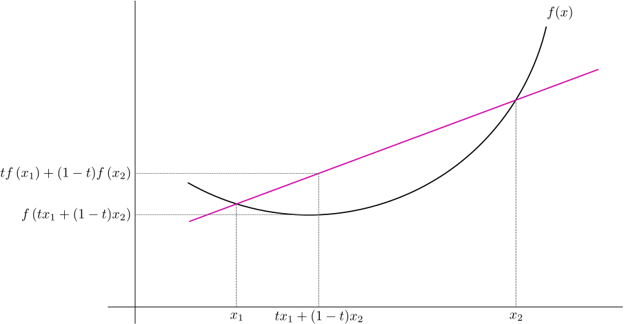

Entropy & Neg-log likelihood thumb rule
In this lecture, our goal is to understand where the thumb rule for prefix-free code-lengths came from. To understand this, we are going to take a brief detour and get a sneak-peek into the area of Information Theory.
Information theory is the science of information, and is an area which tries to understand the fundamental nature of what is information, how do we store it, how do we communicate it etc. The whole field (along with some of the most fundamental results in the field) was laid down in a single seminal paper A Mathematical theory of Communication by Claude Shannon in 1948.
Rather than talking about information in philosophical terms, we are going to understand information theory mathematically. We are going to first define some quantities and properties central to information theory. As we will see, understanding the mathematical properties of these quantities is what will lead us to the intuition and understanding of information theory.
Entropy
So, lets get started: the first property, or information-theoretic measure we are going to define is the Entropy. The entropy, although a term overloaded with a lot of meaning in the (math/science) pop culture, has a precise definition in information theory.
Let be a random variable, with alphabet and discrete probability distribution . i.e. one can imagine the samples generate by the random variable to be independent and identically distributed as per distribution .
Then the entropy of the random variable is defined as:
Some comments:
- As you can see, is a simple function of the distribution . So, some works also denote as a . We will use both of these notations interchangeably; but note that that the notation is more precise and will be more helpful when we deal with more complex distributions (like Markov distributions).
- Another way to look at is as expectation over the negative-log likelihood function Although, this feels a bit weird, the neg-log likelihood function is a completely legitimate function of the random variable . All the different viewpoints are useful in different scenarios
Properties of Entropy
Now that we have defined Entropy, lets take a look at some properties of . To prove most of these properties, we are going to need a simple but a very profound property of convex functions: the Jensen's inequality.
Jensen's inequality
Let be a convex function. Let be a random variable on with discrete probability distribution be some probability distribution. Then:
Similarly if is a concave function, then the reverse inequality is true:
In both cases, equality holds iff (if and only if)

- If one looks at the LHS: , then it can be understood as simply a weighted average with weights over the points . This weighted average corresponds to a point somewhere on the segment joining points and
- If one looks at the RHS: . Thus, the RHS corresponds to the value of the convex function at the weighted averaged point . It is clear from the figure that because of the "bowl-shaped* nature of , .
- It is also clear from the figure why the equality condition holds true iff
We won't prove the Jensen's inequality here, but it is useful to understand and visualize the inequality. For a rigorous proof look at the wiki article on Jensen's Inequality. In the simple discrete case, it can be proved using induction.
Okay, we are all set to look at some properties of Entropy. As you can guess, in our case, we will be specifically using Jensen's inequality on the concave function .
1. Non-negativity of Entropy: :
It is easy to see that . The reason is that: , as
2. Upper bound on Entropy: :
We know that . We can also compute an upper bound on : The first step of the proof follows from Jensen's inequality for the Concave function . Also, note that the equality is possible only if: which implies that
3. Joint entropy of independent random variables:
If we have random variables , we can define their entropy simply as the entropy of the pair . The joint entropy is denoted as and can be expanded as
Now if and are independent random variables, then we have
Thus, the joint entropy of independent random variables is simply the sum of their individual entropies. This generalizes to independent random variables using induction. In particular, if the -tuple consists of i.i.d. random variables distributed like , then . The general case of dependent random variables and their joint entropy is studied in a later chapter.
4. Entropy as a lower bound: for any distribution :
Let us spell out this property in a bit more detail. Given any probability distribution , the following is true: the equality holds iff , i.e. we want to show that Okay, so proving the lower bound property is equivalent to showing that . Any idea how can we do this?
The idea is again to use Jensen's inequality:
Note that we used Jensen's inequality in step (2), but the sign of the inequality is reversed because of the negation. We also know that equality holds iff i.e. if !
Alright! This proves our property as
Let's pause a bit and think about what this property is telling:
- Essentially we are telling that is the solution to the minimization problem: We will see that this characterization is often quite useful.
- Another corollary we proved is that for any two distributions . The quantity on the right is also known as the KL-Divergence between the two distributions.
Let and be two given probability distributions. Then the KL-Divergence is defined as:
The following property holds for :
Equality holds iff
The KL-Divergence is a very important information theoretic quantity, which we will revisit!
Okay, now that we have defined and got a bit familiar with some of the information theoretic measures, we are all set to understand where the thumb rule comes from!
To do so, let's try to answer the question:
Given a probability distribution ,
- What is the optimal prefix-free code for this distribution?
- What is the best compression it can achieve?
Optimal prefix-free codes
The question seems quite daunting! How can we even go about approaching this one? The space of all prefix-free codes is quite large, and not very structured.
Luckily, based on the converse of Kraft's inequality, we know that the space of all prefix-free codes can be characterized by the inequality:
where represent the code-lengths (i.e the depths of the nodes in the prefix-free tree)
Thus, the problem of finding the optimal prefix-free code given a probability distribution can be formulated as a concise optimization problem.
The problem of finding optimal prefix-free code given a probability distribution can be formulated as:
Given probabilities , solve for code-lengths , such that:
Quite elegant! We have disassociated the problem of finding optimal prefix-free codes from unclear search spaces over trees and so on. Instead, we now just have this concrete optimization problem. Unfortunately we have integers to optimize over; and integer optimization problems might not be a feasible problem in general. In this case however, we can indeed solve this problem! We will look at a solution in the next lecture.
For this lecture, our goal is to see what best average compression performance we can achieve, i.e what is the solution (or a lower bound) to the minimization objective
Lower bounding the average codelength
Okay, lets try to see how we can obtain a lower bound for , given the constraint that .
Let's start by adding a dummy length , so that: The benefit of this formulation is that we can now imagine as probability values, and use the plethora of properties we proved earlier! Note that might not be an integer, but that is okay.
Let's also define , so that the new objective is equal to the average codelength.
Okay, now that we have the setup ready, let us try to analyze the average codelength:
All we have done until now is some basic math yoga, but the outcome is that we have transformed the objective into a form more amenable for our purpose. Do you now see the lower bound?
Using the property 3 of entropy for distribution and proved above, we can now show that:
Thus, the lower bound on average codelength of any prefix-free code is the Entropy ! It is also easy to see that the equality holds if and only if: for all .
To summarize the important theorem:
Given a distribution for data. Any prefix-free code with code-lengths will have average codelength lower bounded by the entropy of the source distribution :
The equality holds if and only if: for all , i.e:
Some observations/comments:
1. Thumb-rule justification
Notice that the equality condition tells us that optimal compression can be achieved by the prefix-free code iff:
and, this is the justification for the thumb rule , we discussed in the previous lecture and used for construction of Shannon code.
2. Shannon code performance
Another point to note is that, we can never achieve avg codelength equal to entropy , unless , i.e. all the probabilities are powers of . This can be quite unlikely in real life, which is a bit of a bummer.
The positive news is that we can in fact get quite close to .
Let's analyze the performance of Shannon code. We know that Shannon code has code-lengths , thus the average codelength is:
Thus, Shannon code guarantees that we can always achieve average code-lengths within bit of the optimal. This is quite promising!
Essentially, unless the entropy is very low, we are not missing much by using Shannon codes.
3. Coding in blocks
As discussed above Shannon codes only guarantee performance up to 1 bit of entropy, and this gap is too much in some scenarios, especially with highly compressible data. In such cases, one common strategy is to code in blocks. This simply means we can treat an input -tuple as a symbol in a bigger alphabet, and apply Shannon code to this alphabet. So we split the input stream into blocks of size symbols, encode each block and concatenate the results. Here again, Shannon codes get us to within 1 bit of entropy and hence we have (denoting the expected code length by ):
Using the properties of joint entropy for i.i.d. random variables, and dividing by we get which means coding in blocks of brings us within bits of entropy. This means we can get arbitrary close to entropy using block coding and hence entropy is not only the lower bound, but it is also achievable. In the next chapter, we will look at some examples of this phenomenon where we'll see how the average code length improves as we code with bigger and bigger blocks. But there is no free lunch with block coding! Note that a naive implementation would lead to a complexity exponential in as if the alphabet size is per-symbol, with block-coding the number of symbols in the alphabet an encoder needs to handle expands to a size of . Moreover, we now have a decoding delay of since we cannot just go and decode a single symbol until we get the entire block. In later chapters, we will look at clever implementations that successfully get the benefits of block coding while reducing this penalty.
4. Entropy as a lower bound for uniquely decodable codes
We showed that lower bounds the average code-lengths for prefix-free codes. But, what about general symbol codes which are uniquely decodable (or lossless)?
We saw that even for general uniquely decodable symbol codes, the Kraft inequality holds true. i.e: Notice that this is precisely the only property we use for proving the lower bound on , and so, entropy is in fact a lower bound on average code-lengths for general uniquely decodable codes.
5. Mismatched coding and KL-divergence
We saw above that the code optimized of a source will have code lengths . This achieves expected code length close to entropy:
Now, consider a scenario where we optimize a code for source distribution but then use it for a source with distribution . In this case, the code lengths will be and the average code length will be In this scenario, the optimal code length was but the actual average code length exceeds it by . Thus the KL-divergence is the penalty for mismatched coding for using the incorrect distribution for designing the code. Later in the class we will study universal codes which imply existence of distributions that can closely approximate any distribution from a large class, meaning that a single code (over a block) is able to perform well irrespective of the actual source distribution.
Entropy beyond data compression
Given a random variable over with distribution , we know that the fundamental limit on compression of the random variable using symbol codes is .
is sometimes also referred to as the self-information of the random variable , as in a way, we are saying that the amount of information (on an average) in each instantiation of the random variable is bits. This is quite natural, as we should not be able to compress an input better than the amount of information it is worth.
The discussion, although a bit hand-wavy is quite fundamental. Due to this, we see popping up at lots of other places as a fundamental limit of a problem, and not just in case of compression.
For example, here are a few scenarios, for which the answer is related to . Try to solve them for fun!
1. Simulating non-uniform random variables: Lets say you want to simulate a random variable over with distribution . To simulate the random variable, you are only allowed to use fair coin tosses. In that case, what is fundamental limit on the average number of coins you would have to toss to simulate ?
2. Simulating a fair coin using a biased coin: Lets now say you have a biased coin with probability of H/T to be respectively. The goal is to use this coin to simulate a fair coin. One simple way to do this is to toss the coin twice, and associate (H,T) as heads, and (T,H) as tails. If we get (H,H), (T,T), then we discard the result and toss again. Is this the optimal strategy though? Can you do better? What is the fundamental limit on the average number of biased coins you would have to toss do to obtain a fair coin?
3. Biased binary search: We are familiar that given a sorted array of size , we can locate a query in one of the bins using comparisons. However, a lot of times, we already have a good idea which bins the query might lie in. Can we accelerate the binary-search in this case? To be more precise, lets say you have a bias that the query will lie in each of the bins with probability . (usually this bias is uniform, i.e ). In such a scenario what is the fundamental limit on the average number of comparisons you have to do to locate the query ?
Although all these scenarios seem very different, they are essentially related to Entropy , and use the property that the self information, the amount of bits corresponding to random variable is . This key intuition led to a very diverse and vibrant area of mathematics called Information Theory. What we saw in today's lecture is just a small glimpse into information theory, but if you are interested please take a look at the course EE 276, and the resources listed there.
Summary and next lecture
To summarize this lecture:
- Entropy: We took a detour into information theory and understood some properties of entropy .
- Entropy as a limit of compression: We derived the properties of and used them to show that is the fundamental limit on the compression, i.e. the average codelength of any prefix-free code designed for compressing a given source is always lower bounded by .
Although we were able to show that is the fundamental limit on average codelength, and that we can always come within 1 bit of the fundamental limit using Shannon codes, it is a bit unsatisfactory as we don't know if Shannon Code is the optimal prefix code.
In the next lecture, we are doing to discuss Huffman Code, which is the answer to the question:
Given a random variable with instances sampled i.i.d with probability distribution , what is the best prefix free code for this source?